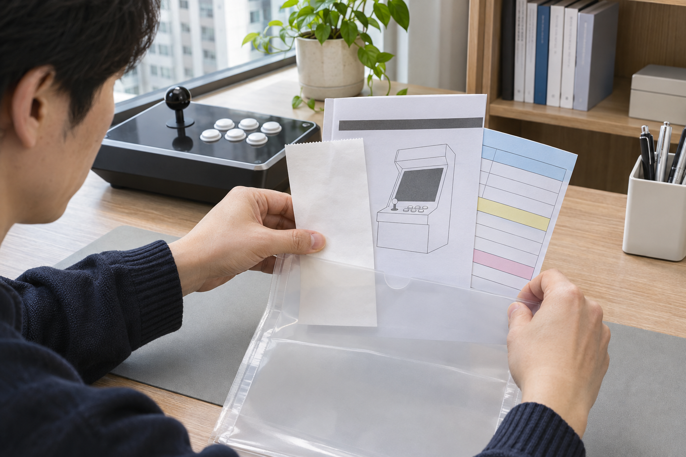
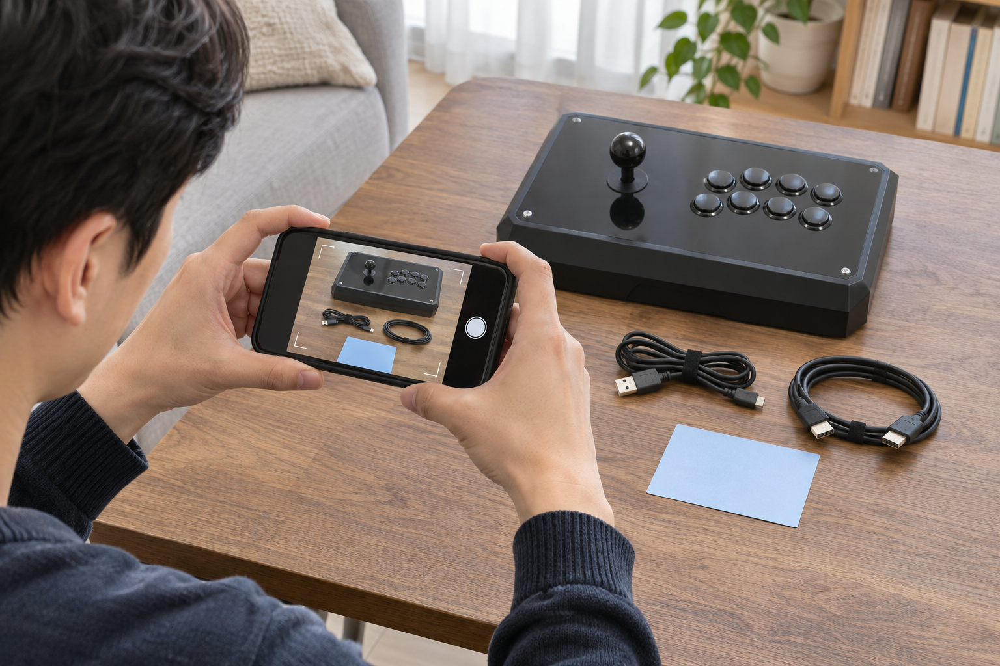

오락기 구매 후에는 주문번호, 구매일, 구매처, 정확한 제품명과 선택 옵션을 한곳에 정리하세요. 주문 화면이나 영수증만 남기지 말고 배송 직후 본체와 구성품 사진을 함께 보관하며, 종이 기록과 디지털 사본을 나눠 두면 나중에 제품을 구분하거나 문의할 때 찾기 쉽습니다.

주문번호와 정확한 제품명을 한곳에 적으세요
주문 완료 화면이나 영수증에서 주문번호, 구매일, 구매처, 제품명과 옵션을 확인해 한 장의 기록으로 정리하세요. 제품명은 줄여 쓰지 말고 구매 당시 표시된 이름을 그대로 남기며, 여러 상품을 함께 샀다면 각 상품과 수량을 따로 구분하는 편이 좋습니다. 결제 수단의 전체 번호처럼 문의에 필요하지 않은 정보는 별도 기록에 넣지 마세요.
주문번호와 제품명·옵션을 한곳에 적어 두면 구매 내역을 다시 찾는 시간을 줄일 수 있습니다.
- 주문번호와 구매일
- 구매한 쇼핑몰 또는 판매 채널
- 주문 당시의 전체 제품명과 선택 옵션
- 함께 받은 구성품과 수량
노리박스 공개 제품 목록에는 레볼루션 RV팩, 신형HX, TV 연결형 등 서로 다른 이름과 형태의 상품이 따로 안내되어 있습니다. 비슷해 보이는 오락기라도 문의할 때 다른 제품과 혼동하지 않도록 주문 당시의 정확한 제품명과 옵션을 남겨 두는 것이 좋습니다.

본체와 구성품 사진을 따로 남기세요
배송을 받은 뒤 포장을 풀기 전 외부 상태를 촬영하고, 개봉 후에는 본체 전체와 동봉된 케이블·조작부·기타 구성품을 한눈에 보이게 찍으세요. 제품 표시부를 촬영할 때는 개인 주소가 적힌 배송 라벨이 함께 나오지 않도록 구도를 정하고, 사진 파일명에는 촬영일과 제품을 구분할 수 있는 짧은 이름을 사용하면 찾기 쉽습니다.
본체 전체와 구성품을 나눠 찍은 사진은 배송 당시 구성을 다시 확인하는 기록이 됩니다.
구성품을 확인하는 순서는 가정용 오락기의 구성품 확인 방법에서도 살펴볼 수 있습니다.
종이와 디지털 사본을 나눠 보관하세요
종이 영수증이나 안내문은 투명 파일 한 곳에 모으고, 주문 화면과 사진은 휴대전화 한 곳에만 두지 말고 다른 저장 위치에도 사본을 남기세요. 파일명이나 폴더 이름을 구매일과 제품 기준으로 통일하면 가족이 대신 찾아야 할 때도 설명하기 쉽습니다. 보관 위치를 가족 모두에게 공개할 필요는 없지만, 필요한 사람이 위치를 알 수 있도록 정해 두세요.
종이 원본과 디지털 사본을 서로 다른 위치에 두면 한쪽 기록을 찾지 못할 때 보완할 수 있습니다.
구매 뒤 문의를 준비하는 방법은 오락기 구매 후 필요한 확인 사항에서 이어서 확인할 수 있습니다.
문의할 때는 필요한 정보만 복사하세요
문의할 때는 정확한 제품명, 주문번호, 구매일과 확인이 필요한 부분의 사진만 골라 전달하세요. 주문 화면 전체를 보내야 한다면 주소, 전화번호, 결제 정보처럼 문의에 불필요한 개인정보가 보이지 않는지 먼저 확인하고 가리세요. 원본 기록은 그대로 보관하고, 전달용 복사본에서만 필요한 부분을 정리하는 방식이 안전합니다.
문의용 자료에는 제품을 확인할 정보만 남기고 불필요한 개인정보는 가려야 합니다.
현재 판매 중인 제품명과 형태는 제품자세히보기에서 확인할 수 있습니다. 주문 제품을 구분하기 어렵다면 문의하기에서 주문번호와 구매 당시 제품명, 확인할 부분의 사진을 함께 알려 주세요.